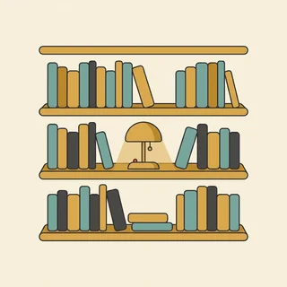

deutschoderwas · Sprechclub · Woche 9 · Strang B · Teil 1 · Dienstag, 10. November
Wörter, die sich ähneln: kennen und wissen, legen und liegen, lernen und studieren
Sechs Paare, die im Kopf ständig die Plätze tauschen. Und sie tauschen sie nicht zufällig: Jedes Paar folgt derselben Logik. Das eine Verb braucht ein Objekt, das andere nicht. Das eine sagt, was jemand tut, das andere, wie etwas ist. Wer diese eine Frage stellt, muss die Paare nie wieder auswendig lernen.
Gleiches Thema, andere Sätze. Wechsle jederzeit — probier ruhig beide Seiten aus.
Sechzig Minuten, sechs Leute
So läuft die Stunde. Jede Zeile sagt, wie lange, in welcher Aufstellung und wer spricht.
0–5👋
AnkommenEine Frage, reihum ein Satz. Kein Kommentar dazwischen.alle sechs, je etwa 40 Sekunden
5–15🎬
DialogZu zweit lesen. Dann verschwindet B und ihr antwortet selbst.drei Paare, dann Rollentausch
15–25⏱️
90 SekundenEin Wort, 90 Sekunden reden. Der Partner hakt die Zielwörter ab.drei Paare, zwei Runden
DebatteDrei gegen drei. Zwei Minuten sammeln, dann vier Wortmeldungen je Seite.zwei Dreiergruppen
55–60🎯
AbschlussEin Satz pro Person: Was nimmst du mit?alle sechs
Wer zu fünft oder zu siebt ist: bei fünf machen eine Dreiergruppe und ein Paar den Dialog, bei sieben spricht in den Paarphasen eine Dreiergruppe — dort dauert jede Runde eine Minute länger.
Erst mal ankommen
Eine Frage, ein Satz pro Person. Reihum, ohne Kommentar dazwischen — das dauert genau vier Minuten.
0–5 Minalle sechs, je etwa 40 Sekunden
Welche zwei Wörter verwechselst du am häufigsten?
Wenn noch Zeit ist:Gibt es in deiner Sprache ein Wort für kennen und wissen?
Antworte in einem Satz. Wer nicht weiterweiß, fängt mit „Bei mir war das so: …“ an — der Rest kommt dann von allein.
Vier Situationen — zwei Runden
Runde 1: Lest den Dialog zu zweit laut. Runde 2: Klappt die Zeilen zu und sprecht frei — nur die Stichwörter bleiben.
Dialog 1 · „Der erste Tag“
Eine neue Kollegin kommt ins Team. A stellt vor, B fragt nach — und benutzt dabei beide Verben richtig.
A
Das ist Nadia, sie fängt heute bei uns an. Kennt ihr euch schon?
B
Nein, wir haben uns noch nicht kennengelernt. Ich weiß aber, dass wir denselben Kurs besucht haben.
🗣️ Erst kennenlernen (das erste Mal), dann wissen + Nebensatz. Zwei Verben, zwei verschiedene Aufgaben — genau nebeneinander.tippen = Hilfe zeigen
A
Ach, wirklich? Bei wem denn?
B
Bei Frau Berger. Ich kenne sie noch aus dem Abendkurs, aber ich weiß nicht, ob sie dort noch unterrichtet.
🗣️ kennen mit Objekt (sie), wissen mit ob-Satz. Beide im selben Satz — daran kann man die Regel gut hören.tippen = Hilfe zeigen
A
Sie ist letztes Jahr an die Volkshochschule gewechselt.
B
Gut zu wissen. Dann treffen wir uns vielleicht mal, wenn ich dort wieder einen Kurs mache.
🗣️ treffen statt kennenlernen, weil man sich schon kennt. Und einen Kurs machen — nicht studieren.tippen = Hilfe zeigen
Dialog 2 · „Wo ist der Schlüssel?“
Etwas ist verschwunden. Im Gespräch kommen alle vier Verben vor — legen und liegen, stellen und stehen.
A
Hast du meinen Schlüssel gesehen?
B
Ich habe ihn vorhin auf den Tisch gelegt — er müsste noch dort liegen.
🗣️ Erst die Handlung: gelegt + auf den Tisch (wohin, Akkusativ). Dann der Zustand: liegen + dort (wo).tippen = Hilfe zeigen
A
Da liegt er nicht. Nur die Post.
B
Dann schau mal auf der Kommode. Ich stelle die Tasche dort immer hin, vielleicht ist er reingefallen.
🗣️ hinstellen mit dort und der Richtung hin. Und beachte: Ich stelle die Tasche — mit Objekt, weil ich etwas tue.tippen = Hilfe zeigen
A
Hier ist er! Zwischen den Zeitungen.
B
Ich weiß auch nicht, wie er dahin gekommen ist. Ab jetzt lege ich ihn immer in die Schale.
🗣️ wissen + Nebensatz, dann noch einmal legen mit Richtung. Drei Verben, drei verschiedene Muster in zwei Sätzen.tippen = Hilfe zeigen

Dialog 3 · „Lernen oder studieren?“
Ein Missverständnis im Bewerbungsgespräch — und wie man es in einem Satz auflöst.
A
Sie haben Deutsch studiert, steht hier?
B
Nicht ganz. Ich habe Deutsch gelernt — studiert habe ich Betriebswirtschaft, in Kasan.
🗣️ Der Unterschied, der im Lebenslauf zählt. studieren heißt Universität, lernen heißt Kurs oder selbst beigebracht.tippen = Hilfe zeigen
A
Ah, gut zu wissen. Und wie lange lernen Sie schon?
B
Seit drei Jahren. Angefangen habe ich in einem Abendkurs, den Rest habe ich mir selbst beigebracht.
🗣️ sich etwas beibringen — reflexiv mit Dativ. Der eleganteste Weg zu sagen, dass man ohne Lehrer weitergekommen ist.tippen = Hilfe zeigen
A
Das merkt man. Kennen Sie unsere Fachbegriffe schon?
B
Einige kenne ich, aber ich weiß noch nicht, wie viele bei Ihnen dazukommen.
🗣️ Wieder beide nebeneinander: kennen mit Objekt, wissen mit Nebensatz — und eine ehrliche Antwort noch dazu.tippen = Hilfe zeigen
Dialog 4 · „Verabredet“
Zwei verabreden sich — und stolpern dabei fast über treffen und kennenlernen.
A
Wollen wir uns nächste Woche mal treffen?
B
Gern. Ich merke mir Mittwoch — kannst du um vier?
🗣️ sich merken mit Dativ: ich merke mir. Es ist eine Entscheidung, kein Zufall — deshalb nicht ich erinnere mich Mittwoch.tippen = Hilfe zeigen
A
Vier passt. Kennst du das Café an der Ecke?
B
Ich weiß, wo es ist, war aber noch nie drin.
🗣️ Die feinste Unterscheidung des Abends: wissen, wo etwas ist, aber es nicht kennen. Genau dieser Satz zeigt, dass du die Regel verstanden hast.tippen = Hilfe zeigen
A
Dann lernst du es Mittwoch kennen.
B
Sehr gern. Ich erinnere mich noch, dass du es letztes Jahr schon empfohlen hattest.
🗣️ sich erinnern an — hier mit dass-Satz. Es passiert von allein, im Gegensatz zum bewussten sich merken von eben.tippen = Hilfe zeigen
🎭 Und jetzt ihr: Spielt Dialog 2 mit einem Gegenstand, den ihr wirklich manchmal sucht. Regel: In jeder Antwort müssen ein Verb mit Objekt und eines ohne Objekt vorkommen.
⏱️ Die 90-Sekunden-Challenge
Neunzig Sekunden über dich: Wen kennst du, was weißt du, was hast du gelernt, was studiert — und wo liegt gerade dein Handy?
Dein Wort
kennen
1:30
Vier Sätze, dann trägt dich die Zeit:
kennen:Ich kenne hier bisher zwei Menschen richtig gut.
wissen:Ich weiß noch nicht, wie lange ich bleibe.
lernen oder studieren:Studiert habe ich …, gelernt habe ich …
liegen oder stehen:Mein Handy liegt gerade neben mir auf dem Tisch.
Und wenn du zwischen zwei Verben schwankst, sag den Satz mit beiden laut. Ich weiß die Antwort gegen Ich kenne die Antwort — hier gehen sogar beide, aber sie bedeuten etwas anderes: wissen heißt, du kannst sie sagen; kennen heißt, du hast sie schon einmal gehört.
⏱️ Spielregel: In jeder Runde müssen drei verschiedene Paare vorkommen. Wer Ich liege das Buch oder Ich studiere Deutsch im Kurs sagt, fängt noch einmal an.
🎭 Drei Situationen zu zweit
Einer fragt, einer antwortet. Danach tauschen — und beim zweiten Mal ohne die Sätze unten. Regel: In jeder Runde mindestens drei Verben von heute.
1 · Neu im Team
A ist neu, B arbeitet schon länger dort. A fragt nach Menschen, Wegen und Regeln — und B antwortet mal mit kennen, mal mit wissen.
Kennst du die Kollegin aus dem zweiten Stock?Weißt du, wann die Besprechung anfängt?Ich kenne den Weg zur Kantine noch nichtWo liegen die Formulare?
Ich kenne sie nur flüchtig — wir haben uns einmal auf einer Fortbildung kennengelerntSoweit ich weiß, fängt die Besprechung um zehn an, Genaues weiß ich aber nichtDie Formulare liegen im Schrank neben dem Drucker, dort stelle ich auch die Ordner hinFrag am besten Frau Berger, sie weiß, wie das hier läuft
✅ Eine gute Runde enthältB hat mindestens einmal kennen mit Objekt und einmal wissen mit Nebensatz benutzt — und beim Ort zwischen liegen und stellen unterschieden.
2 · Wo ist es hin?
Etwas ist verschwunden. Beide erinnern sich anders daran, wer es wohin gelegt hat.
Ich habe es auf den Tisch gelegtDa liegt es aber nichtVielleicht steht es im RegalIch erinnere mich nicht genau
Ich bin sicher, ich habe es dorthin gelegt, wo es sonst auch liegtKann sein, dass jemand es ins Regal gestellt hatIch merke mir solche Sachen normalerweiseWenn ich mich richtig erinnere, lag es gestern noch hier
✅ Eine gute Runde enthältBeide haben Bewegung und Zustand sauber getrennt — gelegt mit wohin, lag mit wo. Und sich merken stand mit Dativ, sich erinnern mit an.
3 · Der Lebenslauf
A führt ein kurzes Gespräch über den Werdegang, B erklärt den Unterschied zwischen dem, was studiert, und dem, was gelernt wurde.
Was haben Sie studiert?Und wie lange lernen Sie schon Deutsch?Kennen Sie unsere Software?Wissen Sie, wie das Programm heißt?
Studiert habe ich Betriebswirtschaft, Deutsch habe ich hier gelerntAngefangen habe ich im Abendkurs, den Rest habe ich mir selbst beigebrachtDie Software kenne ich aus meiner letzten StelleIch weiß allerdings nicht, ob Sie dieselbe Version benutzen
✅ Eine gute Runde enthältB hat studieren und lernen klar getrennt und im letzten Satz beide Verben nebeneinander benutzt: kennen für die Software, wissen für die Information darüber.
🎴 Sprechkarten
Zieh eine Karte und sprich mindestens vier Sätze am Stück.
Deine Aufgabe
Tippe auf den Knopf.
Drei gegen drei
Zwei Gruppen, eine Frage. Zwei Minuten sammeln, dann spricht jede Seite viermal — abwechselnd.
40–55 Minzwei Dreiergruppen
Wortpaare wie kennen und wissen lernt man am besten über Beispielsätze.
Gruppe A · dafür
„Ich kenne ihn“ und „Ich weiß, wo er wohnt“ — an zwei Sätzen versteht man es sofort.
Regeln zu Personen und Fakten helfen nicht, wenn man mitten im Gespräch ist.
Ein gut gewählter Satz bleibt jahrelang hängen.
Gruppe B · dagegen
Zwei Sätze decken die Fälle nicht ab, an denen man wirklich scheitert.
Wer die Regel kennt, kann sie auf jedes neue Verb anwenden.
Beispiele ohne System führen dazu, dass man immer denselben Satz sagt.
Sätze, die eine Debatte tragen
Ich sehe das anders, weil …Da stimme ich zu, aber …Genau das ist der Punkt: …Das mag sein — trotzdem …Wenn das stimmt, warum dann …?Ich bleibe dabei: …
Wenn die erste Frage durch ist
Warum fällt es so schwer, zwei Wörter zu trennen, die in der eigenen Sprache eines sind?
Wie lernst du solche Paare — mit Regeln oder mit Beispielsätzen?
Welches Paar hat dich schon einmal in eine peinliche Lage gebracht?
Warum ist Ich habe das Buch auf den Tisch gelegen falsch?
Welche Frage hilft dir schneller: wohin oder was tue ich damit?
Gibt es solche Paare auch in deiner Sprache?
Jede Wortmeldung beginnt mit einem der Sätze oben. Das klingt am Anfang steif — und ist genau das, was in der Prüfung und in der Besprechung zählt.
Zum Schluss
Vier Minuten, sechs Sätze.
55–60 Minalle sechs
Ein Satz von jedem: Welchen Satz aus heute nimmst du mit — und wo wirst du ihn brauchen?
📮 Deine Hausaufgabe bis Donnerstag
Vier kleine Aufgaben, zusammen etwa 25 Minuten. Am Donnerstag kommen die nächsten Paare: schmecken, gefallen, mögen — und sehen, schauen, sagen, sprechen.
💡 Warum das hilft: Diese Paare sind keine Vokabelfrage, sondern eine Strukturfrage. Wer einmal begriffen hat, dass es um Objekt oder kein Objekt geht, macht die Fehler nicht mehr — und muss nie wieder eine Liste auswendig lernen.
0 von 0 Aufgaben geschafft.
So sehen die Satzpaare aus:
Ich lege das Buch auf den Tisch. → Es liegt auf dem Tisch.
Ich stelle die Tasse in den Schrank. → Sie steht in dem Schrank.
Ich setze mich auf den Stuhl. → Ich sitze auf dem Stuhl.
Ich hänge das Bild an die Wand. → Es hängt an der Wand.
Ich lege den Schlüssel in die Schale. → Er liegt in der Schale.
Ein einziger Test: Kann ich wohin? fragen? Dann Akkusativ und das Verb mit Objekt. Passt nur wo?, dann Dativ und das Verb ohne Objekt.
So ist eine Raumbeschreibung aufgebaut, die man sich vorstellen kann:
Der Überblick zuerst:Der Raum ist klein, hat ein Fenster nach Süden.
Von groß nach klein: erst die Möbel, dann was darauf ist.
Zustand mit stehen und liegen:Links steht ein Regal, darauf liegen die Ordner.
Bewegung mit stellen und legen:Die Post lege ich immer auf die Kommode.
Zum Schluss ein Detail: etwas, das nur in diesem Raum so ist.
Und der Fehler, den fast alle machen: alles mit ist. Da ist ein Regal, da ist ein Buch klingt flach. Mit stehen, liegen und hängen entsteht sofort ein Bild.
📬 Abgabe: Schick deine Sprachnachricht und die zehn Satzpaare bis Mittwochabend in den Chat. Ich höre alles an und schreibe dir zurück, welche Paare schon sitzen.
🔜 Am Donnerstag, Teil 2:schmecken, gefallen, mögen — sehen, schauen, sagen, sprechen. Die nächsten Paare, und wieder mit demselben Trick: Nicht die Bedeutung entscheidet, sondern was hinter dem Verb stehen muss.